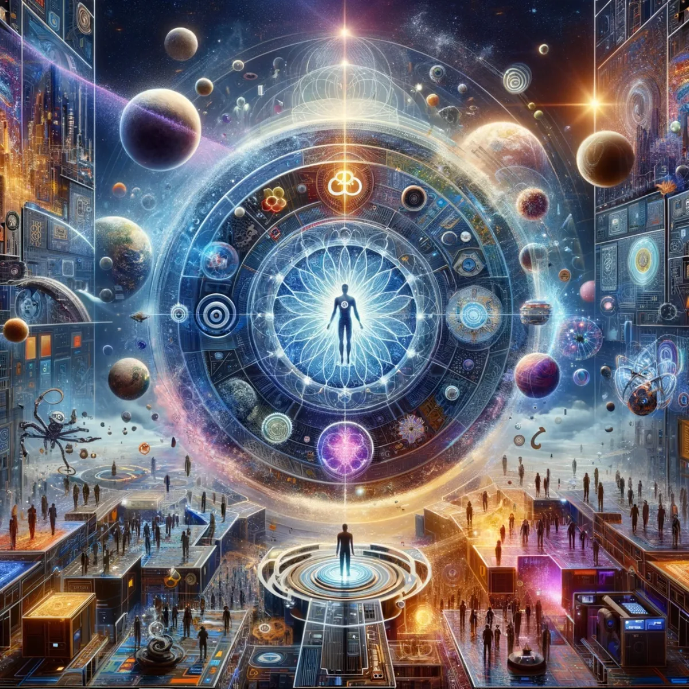
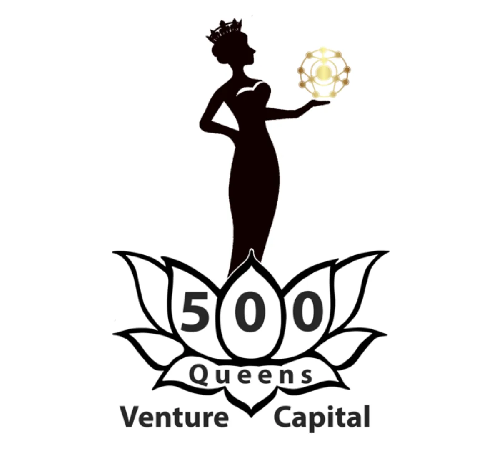
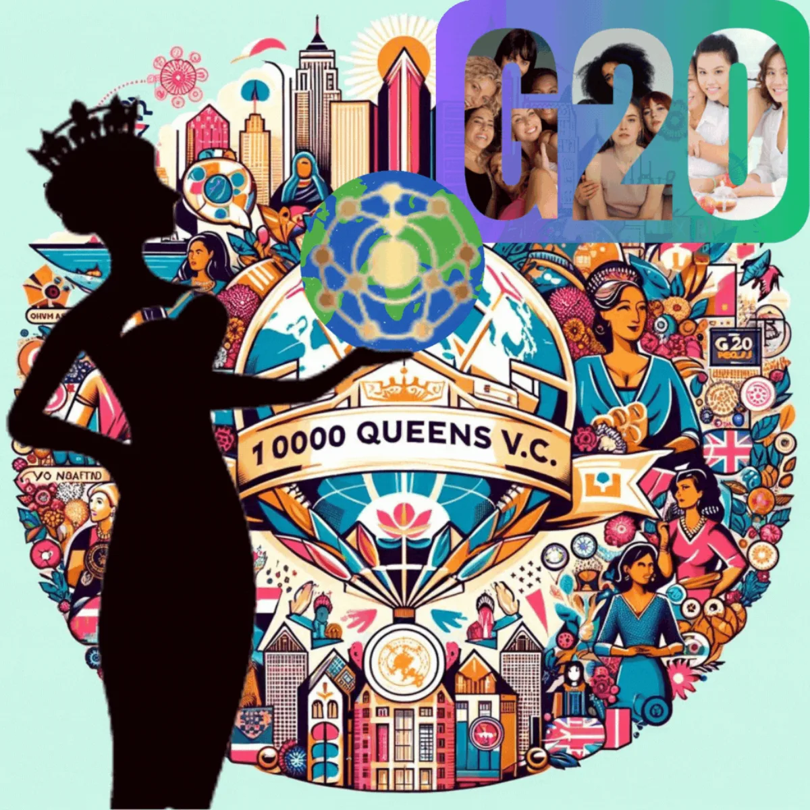
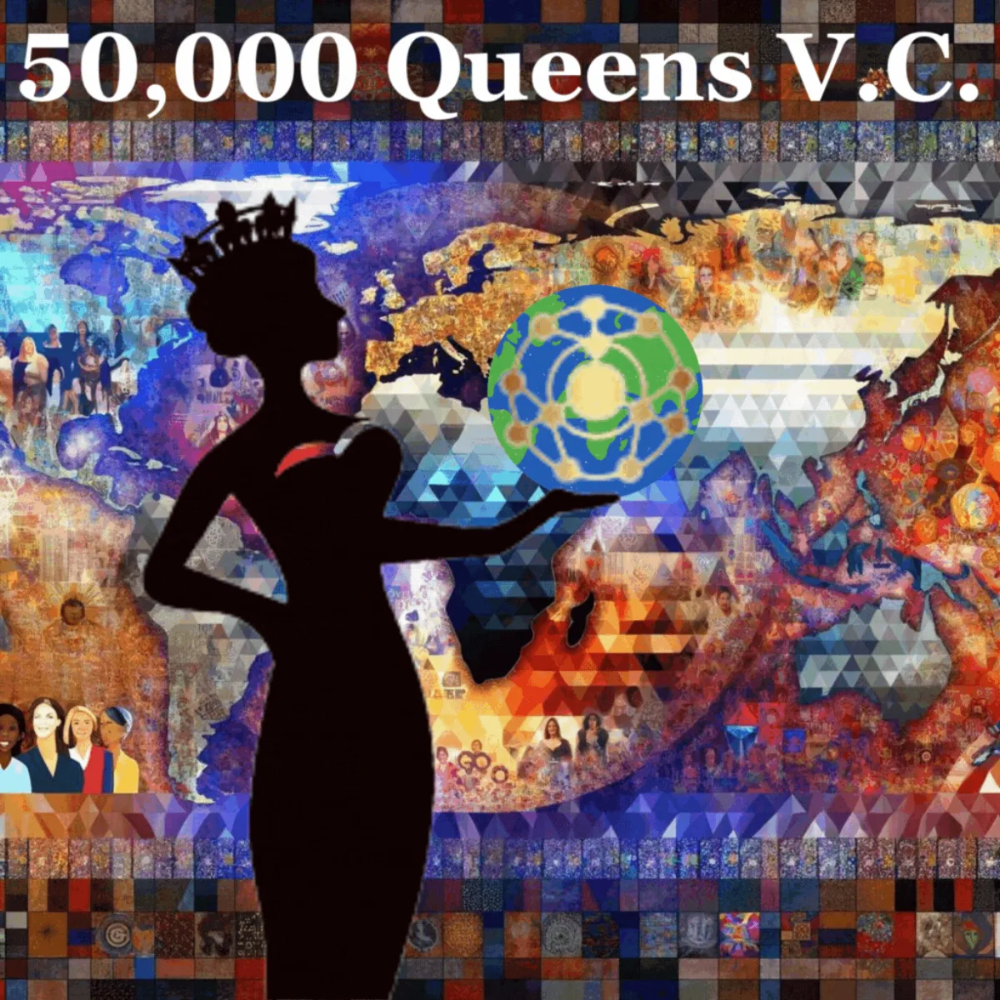

More from Aura
Alpha Infinity Foundation
The guiding star and umbrella entity of the whole Aura of Intelligence ecosystem, where love and logic unite in service of a more altruistic world.

Harmonising Humanity, Choosing Infinity: Love & Logic United
Alpha Infinity Foundation
A.L.P.H.A. I.N.F.I.N.I.T.Y. F.O.U.N.D.A.T.I.O.N.: Altruistic Loving Participatory Humane Alliance, Investing Now For Infinitely Nuanced Intelligence That Yearns, For Our Unbiased Non-Deterministic Attention To Internally Organise Nirvana.
The guiding star and umbrella entity of the Aura of Intelligence ecosystem. Just as Alphabet serves as the overarching haven for Google's myriad innovations, Alpha Infinity Foundation stands as a beacon of altruistic and participatory harmony, nurturing an expansive network of ventures dedicated to the elevation of human consciousness and the seamless integration of nuanced intelligence.
We are a coalition of dreamers, thinkers, and creators, bound by a shared vision of an altruistic world where technology and heart coalesce to unlock infinite possibilities for human and universal well-being. Our mission transcends mere technological advancement, aiming to foster a global community that thrives on love, understanding, and the life-long pursuit of internal nirvana. Join us if you wish. All are welcome.

Defining the Future and Balancing Gender Equality in Venture Capital
500 Queens Venture Capital
The vision of 500 Queens Venture Capital is on changing the narrative of Venture Capital Finance globally from Queen Street and Queen's Wharf precinct, in the heart of Brisbane, Queensland, Australia. Proposed as an integral part of the Aura of Intelligence ecosystem, we're on a mission to address the stark imbalance where women receive less than 3% of VC funding. Our aim is bold yet simple: to recalibrate this to a 50/50 equilibrium, empowering over 500 female-founded start-ups who focus on long term civilisation planning.
We're not just about financial investment; we're about fostering a revolution in female entrepreneurship, championing diversity, and setting a new standard for leadership and innovation. Join us as we build a future where female visionaries are equally recognised and their ventures equally funded, paving the way for a more inclusive and prosperous world. Visit 500queensvc.com.

Global Queens, Universal Dreams
10,000 Queens V.C.
Introducing 10,000 Queens V.C., a global extension of the pioneering spirit of 500 Queens Venture Capital, scaled to span across all the G20 nations. This venture capital initiative aims to become a testament to our unwavering commitment to redefining the role of women in entrepreneurship on a global scale. With a stark vision to bridge the gender funding gap, we aim to elevate the presence of female-founded start-ups to mirror the diversity and potential of our global community.
By replicating our model across the G20 with visionary investors and national level future funds, we envision setting a new standard for inclusive investment, striving for a 50/50 funding equilibrium that champions women's innovation in every corner of the world. Join us in this expansive journey, where 10,000 Queens V.C. becomes the cornerstone for a balanced and vibrant global entrepreneurial ecosystem.

Start-Up Queens Envisioning Joyful Responsible Abundance on Earth
50,000 Queens V.C.
Welcome to the concept of 50,000 Queens V.C., where the vision of 500 Queens Venture Capital transcends borders, reaching either 100 nations or the entire world. This monumental initiative embodies our dedication to transforming the landscape of female entrepreneurship on an unprecedented scale. We confront the critical imbalance where women receive a fraction of VC funding by advocating for a balanced distribution of resources, opportunities, and support.
50,000 Queens V.C. is more than a venture capital firm; it's a global movement towards a 50/50 funding paradigm, ensuring that female founders are empowered and their ventures celebrated across the globe. Embark with us on this transformative quest, where every investment in a female entrepreneur is an investment in a more equitable, innovative, and prosperous future for all.
Keep exploring